Chapter 5 Null Hypothesis Significance Testing (NHST)
Null Hypothesis Significance Testing (NHST) is a statistical method widely used in research, including health sciences, to evaluate whether observed data provide sufficient evidence to refute a specific hypothesis. It operates within a framework of probability and decision-making to address the following question:
Are the observed results likely to occur by chance alone if the null hypothesis is true?
If one decides that the observed results are unlikely to occur by chance alone, the null hypothesis is rejected in favor of an alternative hypothesis.
NHST is not designed to “prove” hypotheses but rather to provide evidence against the null hypothesis. If one reads in a paper that there was “no association”, this typically means the \(p\)-value was larger than the arbitrary threshold of \(0.05\). This does not imply that there is no association (Misconception 2 here).
Underlying NHST is the idea of falsifiability. Sometimes one counter example is enough to reject a hypothesis like “all swans are white”. Seeing one black swan, proves the hypothesis wrong.
{kind=link}
Key concepts:
Null Hypothesis \(H_0\): This represents the assumption of some specific effect or no effect at all. For example, in a clinical trial comparing two treatments, one might state that both treatments have the same effect. The alternative ist that one treatment is superior to the other.
Alternative Hypothesis \(H_1\): This is the opposing claim to \(H_0\), the logical complement. Example:
- \(H_0: \theta \le 0.4\)
- \(H_1: \theta > 0.4\)
- \(H_0\) states that the treatment effect is less than or equal to 0.4, while \(H_1\) states that the treatment effect is greater than 0.4.
\(p\)-value: The \(p\)-value quantifies the probability of obtaining results (test statistic) as extreme as (or more extreme than) the observed data, assuming that \(H_0\) is true. A smaller \(p\)-value indicates stronger evidence against \(H_0\). There are many misconeptions about \(p\)-values.
Significance level \(\alpha\): Researchers set a threshold to determine whether to reject \(H_0\). If the \(p\)-value is smaller than \(\alpha\), \(H_0\) is rejected in favor of \(H_1\). Note, that there is absolutely no special reason to use \(\alpha = 0.05\) as a default value. To quote Ronald Fisher (p.44): “The value for which P = .05, or 1 in 20, is 1.96 or nearly 2; it is convenient to take this point as a limit in judging whether a deviation is to be considered significant or not.”
How NHST works:
Formulate Hypotheses: Define \(H_0\) (e.g., “The new therapy has no effect”) and \(H_1\) (e.g., “The new therapy improves outcomes”).
Determine the necessary sample size to find the effect.
Collect data: Perform an experiment or study to gather relevant data.
Calculate the test statistic: Compute a value based on the sample data that reflects the difference or effect under investigation.
Compute the \(p\)-value: Determine the probability of observing the test statistic (or more extreme values) if \(H_0\) is true.
Make a decision: Compare the \(p\)-value to the significance level:
- If \(p < \alpha\): Reject \(H_0\); evidence suggests \(H_1\) is true.
- If \(p \ge \alpha\): Fail to reject \(H_0\); insufficient evidence to support \(H_1\).
(Some) Limitations of NHST:
Focus on \(p\)-values with hard cut-offs: Solely relying on \(p\)-values can lead to overinterpretation of results without considering practical significance.
Dichotomous thinking: The decision to “reject” or “fail to reject” \(H_0\) oversimplifies the complexity of real-world data. This binary thinking incentivizes researchers to focus on statistical significance rather than real relevance. It happened to me not only once that a colleague looked at me with a sad facial expression announcing that the \(p\)-value was “not significant”. This should be not an issue at all. The focus should be on doing useful analyses in the most rigorous way possible. Note that the difference between “significant” and “not significant” is itself not significant.
Sample size influence: Large samples can make small, clinically irrelevant differences “statistically significant”. Example: Given an arbitrarily small difference between means of two groups. There is always a sample size that makes the difference “significant”. See Exercise 2.
Publication bias: Many journals tended to publish studies with “significant” results. “Not significant” results were often not published. This leads to a distorted view of the literature. All rigorously conducted studies should be published, irrespective of the results.
\(p\)-hacking: In the pursuit for “significant” results (which results in publications, which results in tenure), it is natural to do everything to get them. This can include data dredging, selective reporting, and other questionable practices. In my humble opinion, very often, researchers are not to blame but incentives. It is important to understand that probabilities are defined before an event has happened. The probability for the esteemed reader to win the Swiss lottery is rather small and I would take a large bet against it. But every week, someone wins (approximately). After the fact, one should not be surprised that someone won, since it follows from the law of large numbers.
See Kruschke for more limitations of NHST.
In practice, NHST should at last be accompanied by confidence intervals, effect size calculations, and a focus on clinical relevance to provide a more comprehensive understanding of the results.
This Review of NHST or this overview might be a good entry point.
This video could also help to understand the basic concepts.
5.1 Example in the literature
\(p\)-values are omnipresent in the scientific literature. There rather few papers in our field that do not contain them. We do not use \(p\)-values in descriptive tables (see here and here).
Here is an example from the literature. Table 2 lists studies and one column contains \(p\)-values. Note, that it is not good practice to present \(p\)-values (if one should use them at all) as dichotomy: \(p < 0.05\) (Misconception 8 here). This statement does not allow to judge the strength of the evidence against the null hypothesis. Both, \(p = 0.00000001\) and \(p = 0.049\) would satisfy the inequality. Since this dichotomy decides around an arbitrary threshold (\(\alpha = 0.05\)), the decision is also somewhat arbitrary.
When reading papers, watch out for oceans of \(p\)-values and their selective dichotomous interpretation. This is a clear warning sign.
5.2 Binomial test
In the first chapter, we invented the 1000-researcher experiment. There, we have already encountered hypothesis tests in disguise. If we would assume that the probability of a false positive is 0.04, we would “expect” (around) 40 false positives. We asked, what is the probability of observing 137 or more. This is an example of a one-sided hypothesis test:
- \(H_0: \theta \le 0.04\)
- \(H_1: \theta > 0.04\)
Under \(H_0\), what is the probabilty to see the oberved number (137) of false positives (in our case, this is the test statistic) or more?
The answer was \(p = 5.551115 \cdot 10^{-16}\) (or less if one chooses \(\theta < 0.04\)).
A reasonable person would say, that this result did not happen by chance alone and therefore conclude, the true, but unknown false positive rate \(\theta\) is larger than 0.04.
Formally, this is called a (one-sided) binomial test.
Note, that \(H_1\) is the logical complement of \(H_0\).
##
## Exact binomial test
##
## data: 137 and 1000
## number of successes = 137, number of trials = 1000, p-value < 2.2e-16
## alternative hypothesis: true probability of success is greater than 0.04
## 95 percent confidence interval:
## 0.1194241 1.0000000
## sample estimates:
## probability of success
## 0.137The output in R tells us the following:
- data: 137 and 1000 successes oberved
- alternative hypothesis: true probability of success is greater than 0.04, which we assume afterwards.
- \(p\)-value < \(2.2e-16\). This value is smaller than the precision in R (`.Machine’).
- 95 percent confidence interval: \(0.1194241\) to \(1.0000000\). The upper limit of \(1\) occurs since we have a one-sided test. 95% is just convention and has no special meaning.
- Sample estimates: Estimating the true (but unknown) proportion from the sample would just be: \(\frac{137}{1000} = 0.137\)
Two-sided test:
- \(H_0: \theta = 0.04\)
- \(H_1: \theta \ne 0.04\)
One could argue that this is bad style, since we should probably know the direction of the effect (see also 4.2. here).
##
## Exact binomial test
##
## data: 137 and 1000
## number of successes = 137, number of trials = 1000, p-value < 2.2e-16
## alternative hypothesis: true probability of success is not equal to 0.04
## 95 percent confidence interval:
## 0.1162817 0.1598810
## sample estimates:
## probability of success
## 0.137- alternative = “two.sided”, this indicates that we are interested in both directions (higher or lower than \(0.04\)). With some experience, one would probably not test for lower when seeing the observed number of 137.
- 95 percent confidence interval: \(0.1162817\) to \(0.1598810\).
Interpretation of this frequentist confidence interval (CI): When drawing repeated samples, in 95% percent of the samples, the so constructed interval (which will be different everytime) contains the true but unknown parameter (see Illustration here, animations of the frequentist nature here).
{kind=link}
Note, that the “Exact binomial test” was used. There were no approximations made. I would recommend always using exact tests if available, since we are in the 21th century and computers are fast.
Again, the \(\alpha\) level of \(0.05\) has nothing special (apart from convention) to it. We can also use a \(\alpha = 0.14\) level. In this case, we construct confidence intervals with a 86% confidence level. We’ll discuss the \(\alpha\) level below.
##
## Exact binomial test
##
## data: 137 and 1000
## number of successes = 137, number of trials = 1000, p-value < 2.2e-16
## alternative hypothesis: true probability of success is not equal to 0.04
## 86 percent confidence interval:
## 0.1211304 0.1542134
## sample estimates:
## probability of success
## 0.137- confidence interval: \(0.1211304\) to \(0.1542134\).
With smaller coverage probability (86 instead of 95), we get a narrower interval. Trivially, a 100% confidence interval would be \(0\) to \(1\) and a 0% confidence interval would be \(0.04\) to \(0.04\) or any other specific value assuming that the true parameter can take any value from \(0\) to \(1\).
See also Exercise 3.
Comparison with Bayesian version of estimating \(\theta\):
- We cannot include a prior distribution for the paramater \(\theta\).
- We cannot calculate the posterior distribution of \(\theta\). Hence, we cannot make statements like “the probability that \(\theta\) is larger than 0.04 is 0.9”.
- Prior knowledge could probably be included in the form of the null hypothesis stating, for instance, that \(\theta \le 0.2\). This could be based on previous studies or expert knowledge.
5.3 Proportions test
If we are interested in comparing proportions, we can use the proportions test.
5.3.1 One sample case
\(H_0: p = 0.5\). The true, but unknown proportion is 0.5.
\(H_1: p \ne 0.5\). The true proportion is different from 0.5.
set.seed(443)
heads <- rbinom(1, size = 100,
prob = 0.5) # create a sample with known probability
prop.test(heads, 100,
conf.level = 0.94, p = 0.5) # continuity correction TRUE by default##
## 1-sample proportions test with continuity correction
##
## data: heads out of 100, null probability 0.5
## X-squared = 0.25, df = 1, p-value = 0.6171
## alternative hypothesis: true p is not equal to 0.5
## 94 percent confidence interval:
## 0.3739955 0.5681618
## sample estimates:
## p
## 0.47##
## 1-sample proportions test without continuity correction
##
## data: heads out of 100, null probability 0.5
## X-squared = 0.36, df = 1, p-value = 0.5485
## alternative hypothesis: true p is not equal to 0.5
## 94 percent confidence interval:
## 0.3787665 0.5632834
## sample estimates:
## p
## 0.47correct = TRUE indicates that a correction (Yates) is used to make the test more accurate and consider the fact that the test statistic is in fact discrete.
94% confidence interval: \(0.3739955\) to \(0.5681618\).
\(\chi^2 = 0.25\). This is the value of the test statistic used in the test. Under the null hypothesis (in this case \(H_0: p = 0.5\)), the test statistic follows a \(\chi^2\) distribution.
See also Exercise 4.
Let’s verify the test statistic for the test without continuity correction by “hand”:
# Observed and expected values
heads <- 47 # Observed count of heads
total <- 100 # Total flips
p_null <- 0.5 # Null hypothesis proportion
# Observed proportion
p_observed <- heads / total
# Z-test statistic
Z <- (p_observed - p_null) / sqrt((p_null * (1 - p_null)) / total)
# Chi-squared test statistic
X_squared <- Z^2
# Print the results
Z## [1] -0.6## [1] 0.36The \(\chi^2\) distribution can be defined as the sum of squared standard normals \(Z\). See Exercise 8.
Where does the test statistic come from?
According to the central limit theorem,
\(\bar{X}\) (= the proportion of successes in the sample) is approximately normally distributed
\[\bar{X} = \hat{p} \sim N(p, \frac{\sigma^2}{n}) = N(p, \frac{p(1-p)}{n}).\]
This means, the statistic \(\hat{p}\) should show the pattern of a Gaußian distribution when repeated many times.
\(n\) is in the denominator, so the variance of the approximate normal distribution decreases with increasing sample size and we
can be more certain about the true proportion with increasing sample size.
Note that we want to find the true but unknown proportion \(p\) of a Bernoulli distribution which has expected value \(p\) and variance \(p(1-p)\).
Given this distributional statement, it follows that if we subtract the mean assumed under \(H_0\) (\(p_0 = 0.5\)) and divide by the standard deviation, the resulting test statistic is (approximately) distributed according to a standard normal distribution:
\[Z = \frac{\hat{p} - p_0}{\sqrt{\frac{p_0(1-p_0)}{n}}} \sim N(0, 1).\]
This value squared gives us the value of the test statistic above: \(0.36\).
5.3.1.1 Or the same with binomial test
\(H_0: p = 0.5\) The true but unknown proportion is \(0.5\).
\(H_1: p \ne 0.5\) The true proportion is different from \(0.5\).
This is a two-sided test.
set.seed(443)
heads <- rbinom(1, size = 100,
prob = 0.5) # create a sample with known probability
binom.test(heads, 100,
conf.level = 0.94, p = 0.5)##
## Exact binomial test
##
## data: heads and 100
## number of successes = 47, number of trials = 100, p-value = 0.6173
## alternative hypothesis: true probability of success is not equal to 0.5
## 94 percent confidence interval:
## 0.3731683 0.5685327
## sample estimates:
## probability of success
## 0.47We get a slightly different \(p\)-value and confidence interval but the same conclusion.
Let’s also verify the \(p\)-value and confidence interval by “hand”:
\(p\)-value: What is the probability that we get 47 successes or more “extreme” (into the direction of the \(H_1\)) assuming \(H_0\) is true?
\(p\)-value \(=\mathbb{P}(\text{Number of successes} \ge 53 \text{ or} \le 47)\).
## [1] 0.6172994And the \(p\)-value is spot on.
94% Confidence interval: These are the so-called exact Clopper-Pearson intervals, since they always have coverage probability of at least \(1 - \alpha\).
## [1] 0.3731683 0.5685327 ## attr(,"conf.level") ## [1] 0.94## [1] 0.03000002## [1] 0.02999993The confidence interval is indeed \(0.3739955\) to \(0.5681618\).
5.3.2 More than one proportion
\(H_0: p_1 = p_2 = p_3 = p_4 = \frac{\sum smokers}{\sum patients} = 0.9370277\). Proportions are equal in all 4 groups.
\(H_1: \text{At least one of the proportions is different}\)
library(tidyverse)
# Data from Fleiss (1981), p. 139.
# H0: The null hypothesis is that the four populations from which
# the patients were drawn have the same true proportion of smokers.
# H1: The alternative is that this proportion is different in at
# least one of the populations.
smokers <- c(83, 90, 129, 70)
patients <- c(86, 93, 136, 82)
categories <- c("Group 1", "Group 2", "Group 3", "Group 4")
data.frame(
Category = categories,
Proportion = smokers / patients
) %>%
ggplot(aes(x = Category, y = Proportion)) +
geom_bar(stat = "identity", fill = "steelblue", alpha = 0.7) +
labs(
title = "Proportion of Smokers in Each Group",
x = "",
y = "Proportion"
) +
ylim(0, 1) +
theme_minimal() +
theme(plot.title = element_text(hjust = 0.5))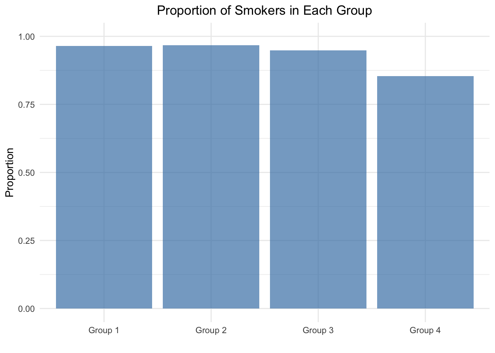
##
## 4-sample test for equality of proportions without continuity correction
##
## data: smokers out of patients
## X-squared = 12.6, df = 3, p-value = 0.005585
## alternative hypothesis: two.sided
## sample estimates:
## prop 1 prop 2 prop 3 prop 4
## 0.9651163 0.9677419 0.9485294 0.8536585\(p\)-value \(= 0.005585\). One would argue that this test statistic is unlikely to have come about by chance alone and reject the null hypothesis, that all proportions are equal.
X-squared = 12.6, df = 3. The test statistic is distributed according to a \(\chi^2\) distribution with 3 degrees of freedom. See also exercise 5. Three degrees of freedom since we know the last component of the test statistic when 3 out of 4 are given. Degrees of freedom is the number of values in the final calculation of a statistic that are free to vary.
The \(p\)-value is calculated quickly:
## [1] 0.005586546Let’s verify the test statistic by “hand”:
## [1] 0.9370277## [1] 1.072329 1.219355 0.552180 -3.107860## [1] 1.1498887 1.4868262 0.3049028 9.6587936## [1] 12.60041We get exactly the same result by using Pearson’s chi-squared test.
Formally, this is a chi-squared test for independence.
\(H_0:\) Here, we test if the proportion of smokers is independent of the group.
If the \(H_0\) is true, the number of smokers/non-smokers (in each cell) is just determined by the number of smokers/non-smokers in the sample, how many people are in the respective group and the total number of people in the sample.
sm1 <- c(rep("smoke", 83), rep("nosmoke", 3))
sm2 <- c(rep("smoke", 90), rep("nosmoke", 3))
sm3 <- c(rep("smoke", 129), rep("nosmoke", 7))
sm4 <- c(rep("smoke", 70), rep("nosmoke", 12))
sm <- c(sm1, sm2, sm3, sm4)
grp <- c(rep("A", 86), rep("B", 93), rep("C", 136), rep("D", 82))
d <- data.frame(sm, grp)
table(d$sm, d$grp)##
## A B C D
## nosmoke 3 3 7 12
## smoke 83 90 129 70##
## Pearson's Chi-squared test
##
## data: table(d$sm, d$grp)
## X-squared = 12.6, df = 3, p-value = 0.005585Let’s verify the test statistic by “hand”:
Degress of freedom are: \(df = (number\_of\_columns - 1) \cdot (number\_of\_rows - 1) = 3 \cdot 1 = 3\).
# Observed data
observed <- matrix(c(3, 83, 3, 90, 7, 129, 12, 70), nrow = 2, byrow = FALSE)
rownames(observed) <- c("nosmoke", "smoke")
colnames(observed) <- c("A", "B", "C", "D")
# Calculate row totals, column totals, and grand total
row_totals <- rowSums(observed)
col_totals <- colSums(observed)
grand_total <- sum(observed)
# Calculate expected counts
expected <- outer(row_totals, col_totals, FUN = "*") / grand_total
print(observed)## A B C D
## nosmoke 3 3 7 12
## smoke 83 90 129 70## A B C D
## nosmoke 5.415617 5.856423 8.564232 5.163728
## smoke 80.584383 87.143577 127.435768 76.836272## [1] 12.60041For example, the first cell (nosmoke in group A) in the table is calculated as follows: \(\frac{86 \cdot 25}{397} = \frac{86}{397} \cdot \frac{25}{397} \cdot 397 = 5.415617\). These are the expected values in this cell, if one would assume that the proportion of smokers does not depend on the group. Hence, one just multiplies the column (\(86/397\)) and row (\(25/397\)) proportions and multiples with the grand total (\(397\)) to get the absolute number of observations in each cell under \(H_0\).
5.3.3 Fisher’s exact test
As mentioned above, we should always use exact tests if available. For the test for independence, we could also use Fisher’s exact test. The underlying distribution for the test statistic is a hypergeometric distribution.
##
## Fisher's Exact Test for Count Data
##
## data: table(d$sm, d$grp)
## p-value = 0.01447
## alternative hypothesis: two.sided5.4 (Classical) \(t\)-test
The \(t\)-test is one of the most famous classical statistical tests out there. Consider these links: 1 2 as starting point. This article could also be interesting.
With the \(t\)-test, we want to answer the question
if the true, but unobserved mean of a population is different from a specific value (one sample \(t\)-test) or
if the true, but unobserved means of two populations are different from each other (two sample \(t\)-test).
Conveniently, R has a built-in function for these tests.
5.4.1 One sample \(t\)-test
\(H_0: \mu = \mu_0 = 25\)
\(H_1: \mu \ne \mu_0 = 25\)
Let’s perform a one sample \(t\)-test in R (and let’s ignore the Shapiro-Wilk test in the link):
set.seed(1234)
my_data <- data.frame(
name = paste0(rep("M_", 10), 1:10),
weight = round(rnorm(10, 20, 2), 1)
)
head(my_data, 10)## name weight
## 1 M_1 17.6
## 2 M_2 20.6
## 3 M_3 22.2
## 4 M_4 15.3
## 5 M_5 20.9
## 6 M_6 21.0
## 7 M_7 18.9
## 8 M_8 18.9
## 9 M_9 18.9
## 10 M_10 18.2## Min. 1st Qu. Median Mean 3rd Qu. Max.
## 15.30 18.38 18.90 19.25 20.82 22.20library(ggpubr)
ggboxplot(my_data$weight,
ylab = "Weight (g)", xlab = FALSE,
ggtheme = theme_minimal())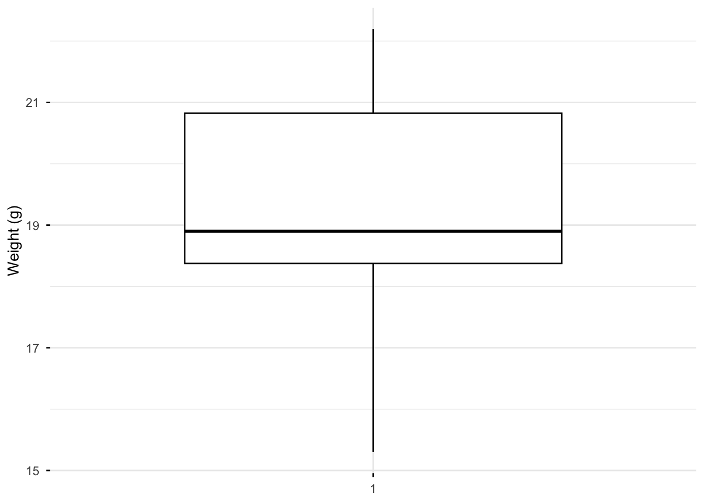
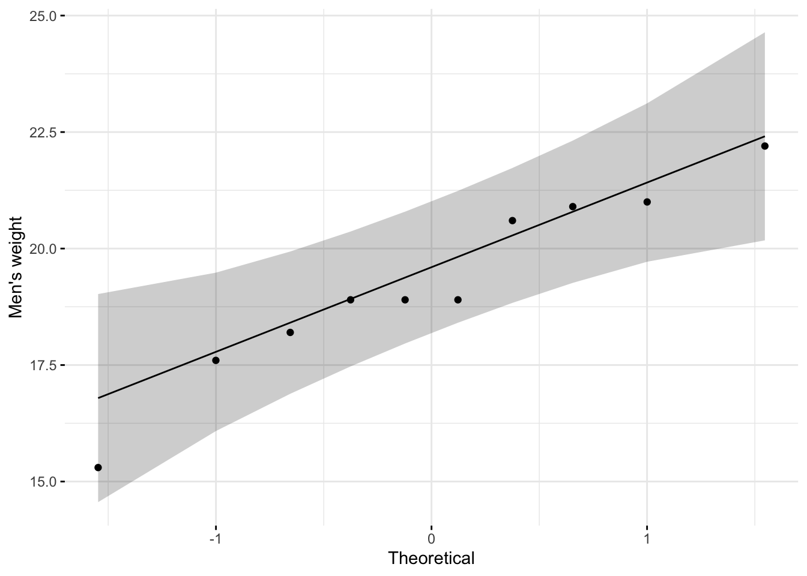
##
## One Sample t-test
##
## data: my_data$weight
## t = -9.0783, df = 9, p-value = 7.953e-06
## alternative hypothesis: true mean is not equal to 25
## 94 percent confidence interval:
## 17.888 20.612
## sample estimates:
## mean of x
## 19.25##
## One Sample t-test
##
## data: my_data$weight
## t = -9.0783, df = 9, p-value = 3.977e-06
## alternative hypothesis: true mean is less than 25
## 94 percent confidence interval:
## -Inf 20.33788
## sample estimates:
## mean of x
## 19.25##
## One Sample t-test
##
## data: my_data$weight
## t = -9.0783, df = 9, p-value = 1
## alternative hypothesis: true mean is greater than 25
## 94 percent confidence interval:
## 18.16212 Inf
## sample estimates:
## mean of x
## 19.25Let’ verify the test statistic by “hand” for the two-sided test:
\[t = \frac{\bar{X} - \mu_0}{s/\sqrt{n}}\]
\(\bar{x} = 19.25\)
\(s = 2.002915\)
\(n = 10\)
\(t = \frac{19.25 - 25}{2.002915/\sqrt{10}} = -9.078319\)
Under the null hypothesis and assumptions met, the test statistic is distributed according to a \(t\)-distribution with 9 degrees of freedom. Hence, the \(p\)-value is:
## [1] 7.953381e-06This matches the output of the t.test function in R.
Assumptions of the \(t\)-test:
You will often see that researchers check if the data is normally distributed. This is not strictly necessary. Merely \(\bar{X}\) must be normally distributed, which is often guaranteed by the central limit theorem for a large enough sample size \(n\).
IF the data is normally distributed, then \(\bar{X}\) is exactly normally distributed. This is always true and the reason for testing for normality of the data.
Another assumption is that \(\frac{s^2(n-1)}{\sigma^2} \sim \chi^2_{n-1}\)
Let’s try to verify this assumption empirically:
# Load necessary libraries
library(ggplot2)
# Parameters
n <- 10 # Sample size
mu_0 <- 25 # Mean under null hypothesis
sigma <- 1 # Standard deviation
num_simulations <- 10000 # Number of simulations
# Simulations
set.seed(42) # For reproducibility
chi_squared_values <- numeric(num_simulations)
for (i in 1:num_simulations) {
# Generate random sample
sample <- rnorm(n, mean = mu_0, sd = sigma)
# Calculate sample variance
sample_variance <- var(sample)
# Calculate chi-squared value
chi_squared_values[i] <- (n - 1) * sample_variance / sigma^2
}
data.frame(chi_squared = chi_squared_values) %>%
ggplot(aes(x = chi_squared)) +
geom_histogram(aes(y = after_stat(density)), bins = 50,
fill = "lightblue", color = "white") +
stat_function(fun = dchisq, args = list(df = n - 1),
color = "red", linewidth = 1) +
labs(
title = expression("Empirical Verification of " ~ chi^2 ~ " Distribution"),
x = "Value",
y = "Density"
) +
theme_minimal() +
theme(
plot.title = element_text(hjust = 0.5)
)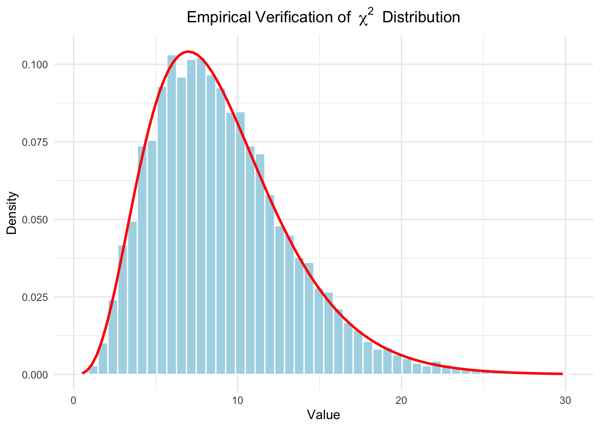
This assumption seems to be met.
The last assumption listed is that \(Z = \bar{X} - \mu\) and \(s\) are independent. \(Z\) measures how far \(\bar{X}\) is from \(\mu\). Independence would mean here that irrespective of how far away a sample is from the true mean (respectively the mean under \(H_0\)), the sample variance has the same distribution.
One could verify this theoretically or by applying an independence test.
5.4.2 Two sample \(t\)-test
\(H_0: \mu_1 = \mu_2\)
\(H_1: \mu_1 \ne \mu_2\)
Let’s jump right in and use our example from the previous chapter where we performed the Bayesian \(t\)-test:
## [1] -50 0 120 120 120 190 240 300## [1] -120 -120 -50 0 0 50 110 190## [1] 8## [1] 8## vars n mean sd median trimmed mad min max range skew kurtosis
## y1 1 8 130.0 116.00 120 130.0 140.85 -50 300 350 -0.13 -1.39
## y2 2 8 7.5 107.94 0 7.5 118.61 -120 190 310 0.29 -1.38
## se
## y1 41.01
## y2 38.16# Boxplot:
data.frame(y = c(y1, y2), group = c(rep(1, 8), rep(2, 8))) %>%
ggplot(aes(x = factor(group), y = y)) + # Use factor for discrete x-axis
geom_boxplot() + # Add boxplot layer
geom_jitter(width = 0.1) # Add jitter for individual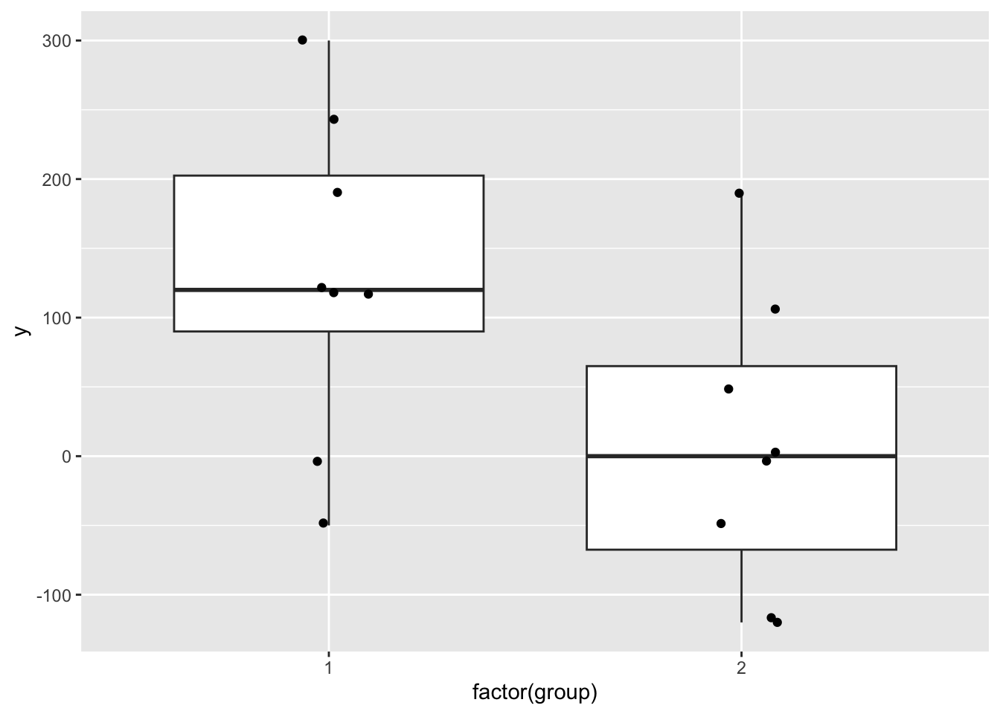
# -> Visually, there seems to be a difference between the two groups.
t.test(y1, y2, conf.level = 0.93)##
## Welch Two Sample t-test
##
## data: y1 and y2
## t = 2.1867, df = 13.928, p-value = 0.04634
## alternative hypothesis: true difference in means is not equal to 0
## 93 percent confidence interval:
## 12.55847 232.44153
## sample estimates:
## mean of x mean of y
## 130.0 7.5The test statistic is a \(t\)-distribution with \(13.928\) degrees of freedom (under \(H_0\)).
The value of the test statistic is \(2.1867\).
\(H_0: \mu_1 = \mu_2\). The group means are equal.
\(H_1: \mu_1 \ne \mu_2\). The group means are different.
\(p\)-value \(= 0.04634\). In the classical framework, this would be considered “significant” at the \(\alpha = 0.05\) level and one would reject the null hypothesis and accept the alternative hypothesis. In the Baysian framework, we abstained from making a decision.
93% confidence interval for the difference in means is rather wide: \(12.55847\) to \(232.44153\).
Let’s try to visualize this.
Under the assumption that there is no difference in means, the test statistic
\[ t = \frac{\bar{X}_1 - \bar{X}_2}{\sqrt{\frac{s_1^2}{n_1} + \frac{s_2^2}{n_2}}} \]
would be distributed according to a \(t\)-distribution with 13.928 degrees of freedom.
# Load ggplot2
library(ggplot2)
# Define degrees of freedom
df <- 13.928
# Define the range for x and the critical t-values
x <- seq(-4, 4, length.out = 500)
critical_t <- 2.1867
# Create a data frame with x and corresponding density values
t_dist <- data.frame(
x = x,
density = dt(x, df)
)
# Plot the t-distribution with shaded tail areas
ggplot(t_dist, aes(x = x, y = density)) +
# Add the main t-distribution curve
geom_line(linewidth = 1, color = "blue") +
# Add shaded areas below the curve outside the critical t-values
geom_ribbon(
data = subset(t_dist, x < -critical_t),
aes(ymin = 0, ymax = density),
fill = "red",
alpha = 0.3
) +
geom_ribbon(
data = subset(t_dist, x > critical_t),
aes(ymin = 0, ymax = density),
fill = "red",
alpha = 0.3
) +
# Add vertical lines for the critical t-values
geom_vline(xintercept = c(-critical_t, critical_t),
linetype = "dashed", color = "black") +
# Annotate the critical t-values
annotate("text", x = -critical_t, y = 0.05,
label = paste0("-t = ", critical_t), angle = 90, vjust = -0.5) +
annotate("text", x = critical_t, y = 0.05,
label = paste0("t = ", critical_t), angle = 90, vjust = -0.5) +
# Add labels and style
labs(
title = "t-Distribution with Shaded Critical Areas (Two-Sided Test)",
subtitle = paste("Degrees of Freedom:", df),
x = "t",
y = "Density"
) +
theme_minimal() +
theme(
plot.title = element_text(hjust = 0.5), # Center the title
plot.subtitle = element_text(hjust = 0.5) # Center the subtitle
)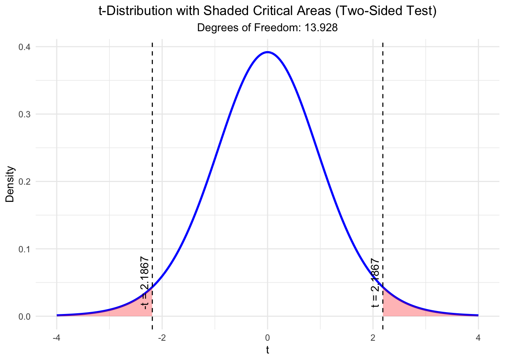
## [1] 0.04633225The plot shows the \(t\)-distribution. Marked in red are the areas where the test statistic takes the value we observed or “more extreme” values. With “more extreme” we mean values that are further away from 0 in both directions since we conducted a two-sided test. The area under the curve is the \(p\)-value. As you can see, the \(p\)-value is the sum of the two red areas and matches the output of the \(t\)-test function in R.
Interesting: This R-file demonstrates what one single outlier can do to a \(t\)-test.
5.4.3 Paired \(t\)-test
In the last case, we assume, that the two samples are not independent anymore. We could, for instance, think of two weight measurements (kg) of the same person before and after a diet. Obviously, these two measurements are not independent. Higher pre-diet weights could be associated with higher post-diet weights.
Analog to before, we now ask if the differences are “significantly” different from \(\mu_0\).
In the bodyweight example, let’s define a 5 kg weight loss as clinically relevant (in reality this is more like 5%), but we keep it simple.
\(H_0: \mu_D \le \mu_0 = 5~kg\). Participants lost 5 kg or less on average, i.e. the true difference between pre- and post weight is on average smaller than 5kg.
\(H_1: \mu_D > \mu_0 = 5~kg\). Participants lost more than 5 kg on average.
Aussumptions for the paired \(t\)-test: - Interval or ratio scale - The differences are independent of each other -
Let’s create some data and perform the test:
library(pacman)
p_load(MASS, tidyverse)
# Create correlated pre post weight-data
set.seed(62) # For reproducibility
n <- 15 # Number of pairs
mu <- c(80, 73) # Mean vector for Pre and Post weights
rho <- 0.7 # Correlation
sigma <- 10 # Standard deviation for both variables
Sigma <- matrix(c(sigma^2, rho * sigma^2, rho * sigma^2, sigma^2), nrow = 2)
weights <- mvrnorm(n, mu = mu, Sigma = Sigma)
df <- data.frame(
Pre_Weight = round(weights[, 1], 2),
Post_Weight = round(weights[, 2], 2)
)
df## Pre_Weight Post_Weight
## 1 87.56 80.21
## 2 78.36 79.88
## 3 63.56 61.55
## 4 76.20 78.17
## 5 101.25 93.44
## 6 85.96 68.18
## 7 84.48 85.37
## 8 65.72 65.12
## 9 75.90 78.89
## 10 73.39 61.41
## 11 71.29 64.28
## 12 97.38 75.29
## 13 80.32 78.59
## 14 64.67 59.79
## 15 78.41 56.64## [1] 0.7023552df %>% mutate(pre_post_diff = Pre_Weight - Post_Weight) %>%
ggplot(aes(x = Pre_Weight, y = Post_Weight)) +
geom_point() +
labs(title = "Pre-Post Weights with the same person",
x = "Pre-Weight [kg]",
y = "Post-Weight [kg]") +
theme(plot.title = element_text(hjust = 0.5))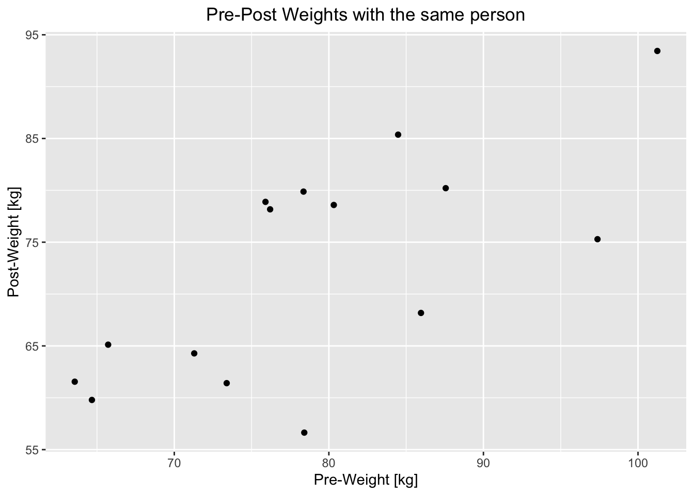
##
## Paired t-test
##
## data: df$Pre_Weight and df$Post_Weight
## t = 0.69261, df = 14, p-value = 0.2499
## alternative hypothesis: true mean difference is greater than 5
## 95 percent confidence interval:
## 2.671093 Inf
## sample estimates:
## mean difference
## 6.509333Let’s verify the test statistic and \(p\)-value by “hand”:
mean_diff <- mean(df$Pre_Weight - df$Post_Weight)
sd_diff <- sd(df$Pre_Weight - df$Post_Weight)
n <- nrow(df)
t_stat <- (mean_diff - 5) / (sd_diff / sqrt(n))
t_stat## [1] 0.6926101## [1] 0.2499412Conclusion: The observed mean difference in weights is explainable by chance alone (\(p\)-value rather high). We continue to believe in \(H_0\).
5.5 Correlation test
In the chapter about descriptive statistics, we calculated the (Pearson) correlation coefficient to measure the strength of the linear relationship between two variables.
Often, the null hypothesis for the correlation coefficient is that there is no correlation between the two variables (\(\rho=0\)). One could argue that this is a rather baseless assumption. In reality, the true correlation coefficient is probably not exactly 0 and one could argue more precisely a range of plausible values for \(\rho\) for the specific case at hand. Often, one can see an ocean of \(p\)-values in the literature, where the correlation coefficient is tested against 0. This is superfluous. For example, if the sample size is \(n=234\) and the sample correlation coefficient is \(r = 0.76\), it is very unlikely that the true correlation coefficient is 0. One does not need a hypothesis test to know this (see exercise 6).
5.5.1 Classical correlation test
We can do a correlation test in R with the cor.test function.
This article is also helpful.
Maybe, let’s take the part about the Shapiro-Wilk test not too seriously.
The test statistic(s) for the test(s) can be found here. If we really want to take the result of such a test seriously, we need to check the assumptions of the test. This might be an interesting read.
The correlation plot from the article looks like this:
library(ggpubr)
mtcars %>%
ggscatter(x = "mpg", y = "wt",
add = "reg.line", conf.int = TRUE,
cor.coef = TRUE, cor.method = "pearson",
xlab = "Miles/(US) gallon", ylab = "Weight (1000 lbs)")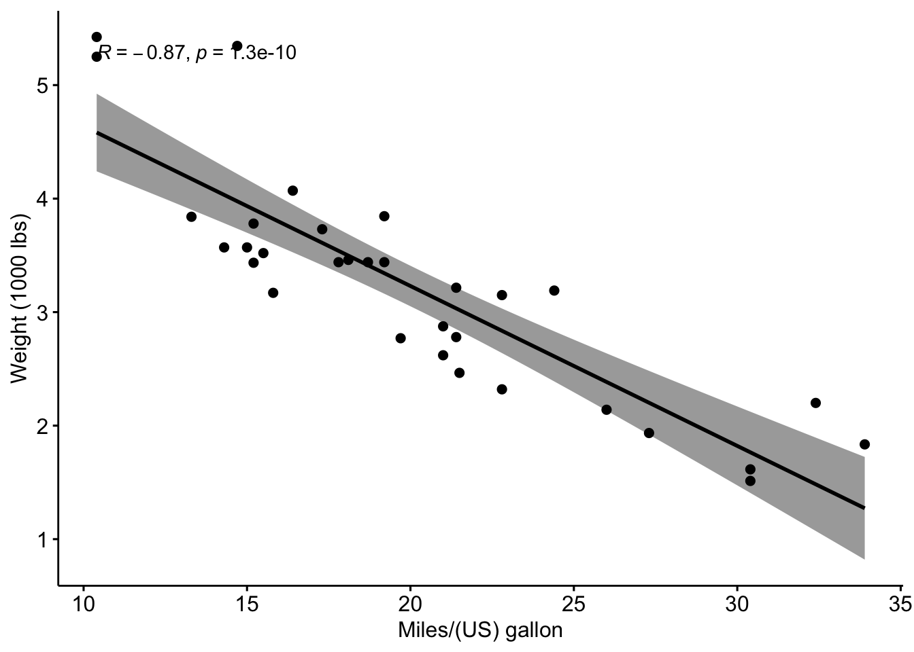
##
## Pearson's product-moment correlation
##
## data: mtcars$mpg and mtcars$wt
## t = -9.559, df = 30, p-value = 1.294e-10
## alternative hypothesis: true correlation is not equal to 0
## 96 percent confidence interval:
## -0.9360192 -0.7362129
## sample estimates:
## cor
## -0.8676594\(r=-0.87\) is the sample correlation coefficient.
Interestingly, cor.test in R can only test \(H_0: \rho = 0\).
In the scatter plot, we can see a linear relationship between the two variables. The correlation might therefore be a useful measure to describe the relationship between the two variables.
- t is the \(t\)-test statistic value (t = -9.559),
- df is the degrees of freedom (df= 30),
- \(p\)-value of the \(t\)-test (\(p\)-value = \(1.29410^{-10}\)).
- conf.int is the confidence interval of the correlation coefficient at 96% (conf.int = \([-0.9360192, -0.7362129]\)) This is what is most interesting to us and should be interpreted in the context of the data.
- sample estimates is the correlation coefficient (\(r = -0.87\)).
Let’s verify the test statistic for the two-sided test by “hand”:
For pairs from an uncorrelated bivariate normal distribution, the sampling distribution of the studentized Pearson’s correlation coefficient follows a \(t\)-distribution with degrees of freedom \(n − 2\). Specifically, if the underlying variables have a bivariate normal distribution, the variable
\[t = \frac{r \sqrt{n-2}}{\sqrt{1-r^2}}\]
has a student’s \(t\)-distribution in the null case (zero correlation).
## [1] -0.8676594## [1] 32## [1] -9.559044## [1] 1.293959e-10This matches the output of the cor.test function in R.
Study this file to understand the variability of the sample correlation coefficient under the null hypothesis (\(\rho=0\)). Please be aware of this variability when interpreting the results of your master thesis.
5.5.2 Bootstrap confidence interval for the correlation coefficient
We could also use the so-called simple non-parametric bootstrap to estimate the confidence interval for the correlation coefficient. These are the steps:
- Create a new sample by drawing with replacement from the original sample.
- Repeat this process many times (e.g., 1000 times).
- Calculate the correlation coefficient for each new sample.
- Calculate adequate sample quantiles of the correlation coefficients to get a confidence interval.
{kind=link}
There is a simple elegance to this method. It is very general and can be applied to many different problems.
Let’s apply it to finding a confidence interval for the correlation coefficient between mpg and wt in the mtcars dataset.
# Bootstrap confidence interval for the correlation coefficient
set.seed(123)
cors <- replicate(1000, {
idx <- sample(1:n, n, replace = TRUE)
cor(mtcars$mpg[idx], mtcars$wt[idx])
})
hist(cors)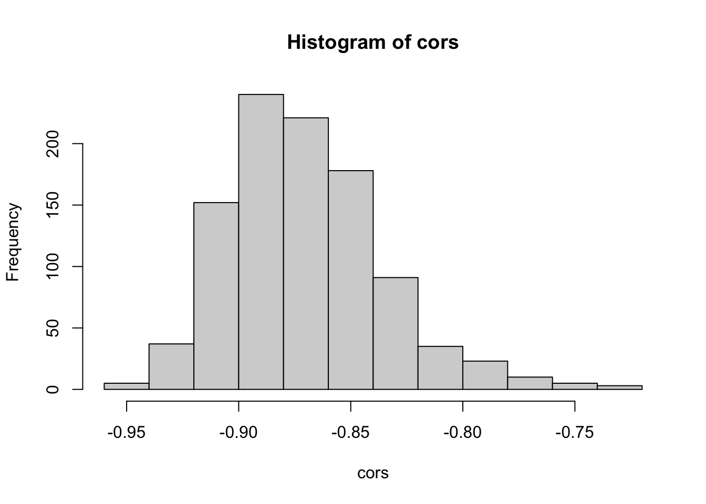
## 2% 50% 98%
## -0.9260149 -0.8745279 -0.7821605We used the variability contained in the data to estimate the variability of the correlation coefficient. As you can see in the histrogram, correlations close to 0 are very unlikely. The 96% bootstrap confidence interval is \([-0.926, -0.782]\).
You can also study the nice animation of the bootstrap here.
5.5.3 Comparison with Bayesian approach
For the Bayesian approach, we can use the correlationBF function from
the BayesFactor package. In analogy to the classical test, we can “test” the null hypothesis
by assuming a prior distribution for the correlation coefficient symmetric around the
value 0 (slee prior plot below).
## Loading required package: coda## Loading required package: Matrix##
## Attaching package: 'Matrix'## The following objects are masked from 'package:tidyr':
##
## expand, pack, unpack## ************
## Welcome to BayesFactor 0.9.12-4.7. If you have questions, please contact Richard Morey (richarddmorey@gmail.com).
##
## Type BFManual() to open the manual.
## ************##
## Attaching package: 'BayesFactor'## The following object is masked _by_ '.GlobalEnv':
##
## posteriorlibrary(tidyverse)
set.seed(444)
# Define a function for the shifted, scaled Beta prior
shifted_beta_prior <- function(rho, rscale) {
# Transform Beta to [-1, 1]
if (rho >= -1 && rho <= 1) {
# (rho + 1) / 2 transforms [-1, 1] to [0, 1]
beta_density <- dbeta((rho + 1) / 2, 1 / rscale, 1 / rscale) / 2
return(beta_density)
} else {
return(0)
}
}
# Define rho values and rscale
rho_values <- seq(-1, 1, by = 0.01)
rscale <- 1 / 3 # Medium scale
# Compute prior values
prior_values <- sapply(rho_values, shifted_beta_prior, rscale = rscale)
# Plot the prior
data.frame(rho = rho_values, density = prior_values) %>%
ggplot(aes(x = rho, y = density)) +
geom_line(color = "blue", linewidth = 1.2) +
labs(
title = "Shifted Scaled Beta Prior Distribution for Correlation",
x = "Correlation (rho)",
y = "Density"
) +
theme_minimal() +
theme(
plot.title = element_text(hjust = 0.5, size = 16),
text = element_text(size = 14)
)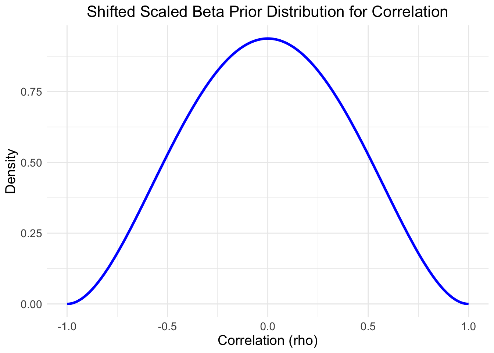
# Compute the posterior samples using correlationBF()
posterior_samples <- correlationBF(
# Bayes factors or posterior samples for correlations.
y = mtcars$mpg,
x = mtcars$wt,
# Use "medium" scale (1/3); prior scale. Preset values can be given as strings
rscale = "medium",
posterior = TRUE, # Get posterior samples
iterations = 10000 # Number of MCMC iterations
)## Independent-candidate M-H acceptance rate: 49%# Independent-candidate M-H = Independent-candiate Metropolis-Hastings algorithm
posterior_samples %>%
ggplot(aes(x = rho)) +
geom_histogram(aes(y = after_stat(density)),
bins = 30, fill = "lightblue", color = "black") +
geom_density(color = "blue", linewidth = 1.2) +
labs(
title = "Posterior Distribution of Correlation (rho)",
x = "Correlation (rho)",
y = "Density"
) +
theme_minimal() +
theme(
plot.title = element_text(hjust = 0.5, size = 16),
text = element_text(size = 14)
)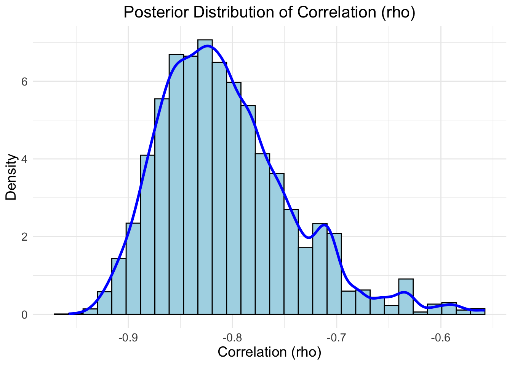
# Compute 96% credible interval
credible_interval <- quantile(posterior_samples[, "rho"], probs = c(0.02, 0.98))
cat("96% Credible Interval for rho:",
credible_interval[1], "to", credible_interval[2], "\n")## 96% Credible Interval for rho: -0.9083272 to -0.6384908## [1] -0.8159496The following intervals were obtained in three different ways:
- Classical frequentist:
- 96% confidence interval: \([-0.9360192, -0.7362129]\)
- Estimate: \(-0.8676594\)
- Bootstrap:
- 96% boostrap confidence interval: \([-0.926, -0.782]\)
- Median of the bootstrap samples: \(-0.8745279\)
- Bayesian:
- 96% credible interval: \([-0.9083272, -0.6384908]\)
- Median of the posterior samples: \(-0.8159496\)
This website should be fun to explore.
5.6 Type 1 and Type 2 errors
| Decision about null hypothesis (H0) | Null hypothesis (H0) is true | Null hypothesis (H0) is false |
|---|---|---|
| Not reject | Correct inference (true negative) (probability = 1 - α) | Type II error (false negative) (probability = β) |
| Reject | Type I error (false positive) (probability = α) | Correct inference (true positive) (probability = 1 - β) |
In the dichotomous world of hypothesis testing, we can make two types of errors:
- A type 1 error (false positive) occurs when we reject the null hypothesis when it is actually true.
- A type 2 error (false negative) occurs when we do not reject the null hypothesis when it is actually false.
The expression \(1 - \beta\) is called the power of the test. It is the probability of correctly rejecting the null hypothesis when it is false.
This R-file could be interesting to study with respect to \(H_0\) and the probability of finding the truth.
How to choose \(\alpha\) and \(\beta\)?
So far, I have not seen this question answered in a practical way in papers. One typically reads that “the level of statistical significance is set at \(\alpha = 0.05\)”, which is arbitrary.
Mudge et al. (2012) answer the question like this: “Thus, the logical decision-making significance threshold, \(\alpha\), should be the value that minimizes the probability, or occasionally, the cost of making any relevant error.”
We have encountered the argument, that Bayesian statistics is subjective. Unfortunately, a similar problem arises in NHST. To quote Mudge et al. again:
“… consistently using \(\alpha = 0.05\) is not an objective approach. Subjectivity is merely shifted away from the choice of \(\alpha\) to the choice of sample size, such that if a researcher wants to find statistical significance using \(\alpha = 0.05\), they should conduct a test with a large sample size …”
For the case of equal a priori probability of the \(H_0\) and \(H_1\) and equal consequence for both types or errors, the suggest to choose alpha by minimizing
\[\omega = \frac{\alpha + \beta}{2}.\]
5.7 The frequentist confidence interval
In frequentist statistics, a confidence interval (CI) is an interval which is expected to typically (with repeated sampling) contain the true but unknown parameter with a certain frequency (probability).
It is very important to understand that for every sample, the confidence interval is different and in the long run, these intervals will contain the true parameter in a certain percentage of cases.
This is a nice visualization of the concept. See also exercise 7.
1:1 relationship between \(p\)-values and confidence intervals:
There is a 1:1 relationship between “statistical significance” and confidence intervals.
Example 1: If we test (\(\alpha = 0.06\)) the null hypothesis that the mean of a population is 0 (\(H_1: \mu \ne 0\)), and we get a \(p\)-value of 0.0298, then the 94% confidence interval for the mean will not contain 0.
Example 2: If we test (\(\alpha = 0.07\)) the null hypothesis that means of two independent populations are equal (\(H_1: \mu_1 \ne \mu_2\)), and we get a \(p\)-value of 0.0433, then the 93% confidence interval for the difference in means will not contain 0.
Example 3: If we test (\(\alpha = 0.05\)) the null hypothesis that the risk ratio for lung cancer equas 1 in smokers vs. non-smokers (\(H_1: RR \ne 1\)), and we get a \(p\)-value of 0.00032, then the 97% confidence interval for the risk ratio (RR) will not contain 1.
5.8 Simulations based approaches
Through the power of modern computers, we can simulate all kinds of hypothesis tests. We just assume that the null hypothesis is true and draw samples from the very distribution. In the old times, computational ressources were scarce and one had to rely on tables that were precalculated.
This shows you how the correlation coefficient behaves under the null hypothesis (that there is no correlation; \(\rho = 0\)). This is a very useful tool to understand the behavior of a test statistic under the null hypothesis. Of course, the probability that a correlation coefficient is exactly 0 is 0 since it’s a continuous variable, but in practice we are interested in “indistinguishable from 0” which is a small value. In the Bayesian framework from Kruschke, we defined a region of practical equivalence (ROPE) for this purpose.
We ask ourselves: What does my test statistic do if the null hypothesis is true? Then try to simulate it. This helps to understand what constitutes a qualitatively different result (from the null hypothesis) considering variability in the data.
5.9 Exercises
5.9.1 Exercise 1 - frequentist confidence interval
- Create 1000 random samples from a binomial distribution with \(n = 100\) and \(p = 0.38\).
- Calculate the 96% confidence interval for each sample using R.
- How often was the true parameter (\(p = 0.38\)) contained in the constructed interval?
5.9.2 Exercise 2 - everything becomes “significant”
Setting: two sample \(t\)-test. Assume there is a small difference between the means of two groups. - Show via simulation that with increasing sample size, the \(p\)-value becomes smaller and smaller and will be “significant” at some point irresespective of how small the true mean difference is and how small the \(\alpha-\) level is.
5.9.3 Exercise 3 - binomial test
- Create a sample from a binomial distribution with \(n = 54\) and \(p = 0.68\).
- Perform a two-sided binomial test with \(H_0: p = 0.5\).
- Calculate the 90% confidence interval for the sample proportion.
- Calculate the p-value for the two-sided test by “hand” (using dbinom/pbinom in R).
5.9.4 Exercise 4 - proportions test
- Create a sample from a binomial distribution with \(n = 100\) and \(p = 0.5\).
- Perform a proportions test with \(H_0: p = 0.5\) and interpret the results.
- Perform the proportions test with the whole range of possible proportions \(H_0: p = 0.01 \cdots p = 0.99\) in steps of \(0.01\). And plot the p-values on the y-axis and the assumed proportion on the x-axis. This is called a \(p\)-value function.
5.9.5 Exercise 5 - proportions test 2
- Use the data from the smokers proportions test example above.
- Draw a \(\chi^2\) distribution with 3 degrees of freedom and calculate the probability of observing a value of 12.6 or larger.
5.9.6 Exercise 6 - correlation coefficent
- Create a sample of \(234\) pairs of uncorrelated observations \((x_i,y_i)\). \(X_i\) and \(Y_i\) are drawn from a normal distribution with mean 0 and standard deviation 1.
- Calculate the sample correlation coefficient \(r\).
- Repeat this 1000 times.
- How often was the sample correlation coefficient larger than 0.76?
5.9.7 Exercise 7 - coverage frequency of CI
- Create a sample (vary the sample size, start small) from a normal distribution with mean 0 and standard deviation 1.
- Calculate the 93% confidence interval for the mean.
- Repeat this 1000 times.
- How often was the true mean (0) contained in the constructed interval?
5.9.8 Exercise 8 - \(\chi^2\)-distribution
The \(\chi^2\)-distribution is defined as the sum of squared standard normals.
- Very this by simulation in R.
- Draw 1000 samples of size 3 from a standard normal distribution.
- Calculate the sum of squared values for each sample.
- Do this repeatedly and plot the histogram of the resulting values with the \(\chi^2\)-density in the diagram.
- Use Q-Q plots to compare the two distributions. The distribution should be a \(\chi^2\)-distribution with 3 degrees of freedom.
5.10 Sample exam questions for this chapter (in German since exam is in German)
For this section, no solutions are provided.
5.10.1 Frage 1
Welche der folgenden Aussage(n) über Nullhypothesen-Signifikanztests (NHST) ist/sind korrekt (0-4 korrekte Antworten)?
- Der \(p\)-Wert gibt die Wahrscheinlichkeit an, eine Teststatistik zu erhalten, die genauso extrem (oder extremer) ist wie die beobachtete, vorausgesetzt, die Nullhypothese ist wahr.
- NHST ist darauf ausgelegt, zu beweisen, dass die Alternativhypothese wahr ist.
- Dichotomes Denken im NHST vereinfacht die Komplexität von realen Daten zu stark.
- Das Signifikanzniveau (\(\alpha\)) gibt die Wahrscheinlichkeit dafür an, dass man die Nullhypothese (\(H_0\)) beibehält, obwohl die Alternativhypothese (\(H_1\)) wahr ist.
5.10.2 Frage 2
Wir ziehen eine Stichprobe mit 3 Werten und erhalten folgendes Ergebnis: \(x = (4,4,4)\). In der Vergangenheit gingen wir davon aus, dass die Zufallsvariable \(X\) folgendermaßen verteilt ist: \[ \begin{array}{|c|c|} \hline x & P(X = x) \\ \hline 1 & 0.2 \\ 2 & 0.3 \\ 3 & 0.4 \\ 4 & 0.1 \\ \hline \end{array} \]
Welche der folgenden Aussage(n) ist/sind korrekt (0-4 korrekte Antworten)?
- Die Wahrscheinlichkeit, dieses Ereignis unter der Annahme der Gültigkeit obiger Verteilung zu beobachten ist \(10^{-4}\).
- Unter der Annahme der Gültigkeit obiger Verteilung wäre die Wahrscheinlichkeit mindestens einmal \(1,2\) oder \(3\) zu sehen 99,9%.
- Wählt man als Teststatistik die Anzahl der \(4\)er in der Stichprobe, so ist die Teststatistik unter der Annahme der Gültigkeit obiger Verteilung binomialverteilt.
- Über die Stichprobe \((1,1,1)\) wäre man weniger überrascht als über die Stichprobe \((4,4,4)\).
5.10.3 Frage 3 - \(t\)-Test
##
## Two Sample t-test
##
## data: group_a and group_b
## t = -0.10816, df = 58, p-value = 0.5429
## alternative hypothesis: true difference in means is greater than 0
## 95 percent confidence interval:
## -0.4186255 Inf
## sample estimates:
## mean of x mean of y
## 4.952896 4.978338Welche der folgenden Aussage(n) ist/sind korrekt (0-4 korrekte Antworten)?
- Es handelt sich um einen zweiseitigen \(t\)-Test.
- Aufgrund des \(p\)-Wertes würde man in diesem Fall die Nullhypothese nicht verwerfen.
- Die Alternativhypothese lautet: \(H_1: \mu_{group\_a} - \mu_{group\_b} > 0\).
- Die Nullhypothese lautet: \(H_0: \mu_{group\_a} = \mu_{group\_b}\).
5.10.4 Frage 4
Wir führen einen Hypothesentest für Proportionen in R durch (\(n=100\)). Hinweis: Nicht den \(p\)-Wert mit dem Parameter p (der gesuchten Proportion) verwechseln.
##
## 1-sample proportions test without continuity correction
##
## data: x out of n, null probability p_null
## X-squared = 6.4533, df = 1, p-value = 0.01107
## alternative hypothesis: true p is not equal to 0.75
## 97 percent confidence interval:
## 0.5317140 0.7356931
## sample estimates:
## p
## 0.64Welche der folgenden Aussage(n) ist/sind korrekt (0-4 korrekte Antworten)?
- Es waren 64 “Erfolge” in 100 Versuchen.
- Die Wahrscheinlichkeit, dass der ware aber unbekannte Parameter p im Intervall \([0.5317140, 0.7356931]\) liegt, beträgt 97%.
- Die Nullhypothese lautet: \(H_0: \text{p} \ge 0.75\).
- Würde man statt 97% nur 90% wählen, wäre das Intervall breiter.